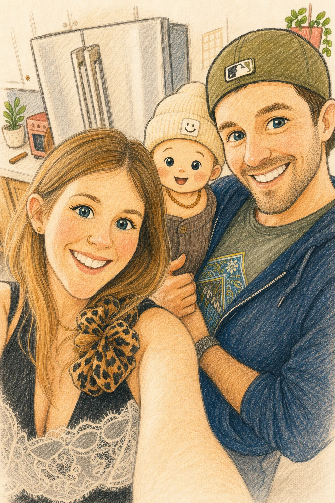

A family sketchbook project
Daily sketchbook practice for noticing more.
Sketcha.day is made by Robby McCullough, a lifelong doodler, designer, and web guy who still thinks a pencil is one of the best tools for learning to see. The lessons focus on small subjects you can study without needing a studio, a class, or a perfect block of time.
Robby brings sketchbook habit, design judgment, and web craft to the pages: clear structure, visible steps, and drawing problems that feel specific enough to teach something. Tracie, a mom and early childhood educator, helps keep the pacing patient and the tone encouraging for beginners, kids, and grown-ups drawing alongside them.
The goal is a site that feels like a useful sketchbook companion: look closely, place the big shapes, adjust what needs adjusting, and finish with a drawing that still feels like it came from your hand.